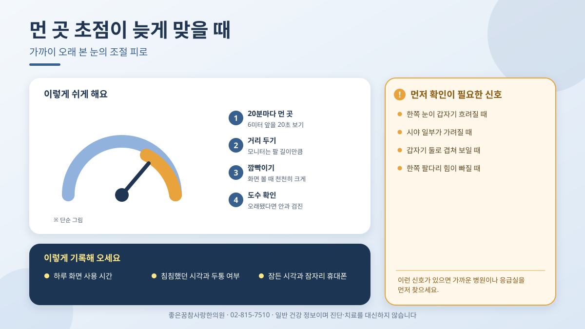

이종호 한의사 감수좋은꿈참사랑한의원 대표원장 (한의사 면허번호 19769)발행 2026-11-26 · 수정 2026-11-26
이 글의 차례
지하철에서 휴대폰을 한참 보다가 내릴 역 안내판을 올려다봅니다. 그런데 글씨가 바로 들어오지 않고 몇 초 동안 뿌옇게 번져 보입니다. 눈을 몇 번 깜빡이고 나서야 또렷해지는데, 요즘 들어 이런 순간이 부쩍 잦아졌다고 느끼십니다.
사무실에서도 비슷합니다. 모니터를 보다 맞은편 벽 시계를 보면 숫자가 늦게 잡히고, 오후가 되면 눈이 침침하고 무겁습니다. 시력이 나빠진 걸까, 벌써 노안이 오는 걸까 걱정이 되어 진료실에서 조심스럽게 물어보시는 분이 많습니다.
이런 증상은 눈의 초점을 맞추는 힘이 지쳐서 생기는 경우가 흔합니다. 가까운 곳을 오래 보면 초점을 잡는 근육이 계속 긴장하고, 그 긴장이 바로 풀리지 않아 먼 곳으로 시선을 옮길 때 초점이 늦게 따라옵니다.
이 글에서는 초점이 늦게 맞는 이유, 노안이나 안구건조증과 어떻게 다른지, 집과 일터에서 해 볼 수 있는 눈 쉬는 습관, 그리고 안과 진료와 나란히 한의원에서 함께 살피는 부분을 정리했습니다.
초점이 늦게 맞는다는 것은 어떤 느낌인가요
가장 흔한 모습은 가까운 화면에서 먼 곳으로 시선을 옮길 때 몇 초 동안 뿌옇게 보이다가 천천히 또렷해지는 것입니다. 반대로 먼 곳을 보다 책이나 휴대폰을 보면 글씨가 바로 잡히지 않는 분도 계십니다.
여기에 눈이 침침하고 무거운 느낌, 눈 안쪽이 뻐근한 느낌, 이마와 관자놀이가 조이는 느낌이 함께 오기도 합니다. 아침에는 괜찮다가 오후로 갈수록, 화면을 오래 본 날일수록 심해진다고 말씀하시는 경우가 많습니다.
이런 불편은 대개 잠을 푹 자거나 주말에 화면을 덜 보면 한결 가벼워집니다. 쉬면 나아지고 무리하면 다시 생기는 흐름이라면, 눈의 구조가 바뀌었다기보다 초점을 맞추는 힘이 지친 상태일 가능성이 높습니다.
왜 가까이 오래 보면 초점이 늦어질까요
눈 안에는 수정체라는 렌즈가 있고, 그 둘레의 작은 근육이 렌즈의 두께를 바꿔 초점을 맞춥니다. 가까운 곳을 볼 때는 이 근육이 힘을 주어 렌즈를 두껍게 만들고, 먼 곳을 볼 때는 힘을 풀어 렌즈를 얇게 만듭니다.
휴대폰이나 모니터를 몇 시간씩 보면 이 근육은 그동안 쉬지 않고 힘을 주고 있는 셈입니다. 오래 주먹을 쥐고 있다가 손을 펴면 손가락이 바로 펴지지 않는 것처럼, 긴장한 근육도 바로 풀리지 않아 먼 곳 초점이 늦게 맞게 됩니다.
여기에 몇 가지가 더해지면 불편이 커집니다. 화면에 집중하면 눈 깜빡임이 크게 줄어 눈 표면이 마르고, 고개를 숙인 자세가 이어지며 목과 어깨가 굳습니다. 어두운 방에서 밝은 화면을 보는 습관, 잠 부족, 긴장도 눈의 피로를 키웁니다.
한의학에서는 눈을 오래 쓰면 피가 소모된다고 보고, 간이 피를 저장해 눈을 기른다고 설명해 왔습니다. 잠이 부족하고 긴장이 이어지면 눈이 쉽게 마르고 침침해지는 흐름을 이런 관점에서 함께 살피기도 합니다.
그래서 진료실에서는 눈만 따로 보지 않습니다. 같은 시간 화면을 봐도 잠을 푹 잔 날과 설친 날, 마음이 편한 날과 쫓기는 날의 눈 피로는 다르게 느껴집니다. 눈을 쓰는 양과 함께 몸이 회복할 여유가 있는지를 나란히 살피는 이유입니다.
계절도 영향을 줍니다. 난방을 켜는 겨울에는 실내가 건조해 눈 표면이 쉽게 마르고, 창문을 닫고 실내에 머무는 시간이 늘어 먼 곳을 볼 기회도 줄어듭니다. 겨울에 유난히 침침함이 심해진다고 느끼는 분이 많은 것도 이런 까닭입니다.
노안이나 안구건조증과는 무엇이 다른가요
노안은 나이가 들며 수정체가 단단해지고 초점을 맞추는 힘이 서서히 줄어드는 변화입니다. 가까운 글씨를 팔을 뻗어 멀리 해야 잘 보이는 것이 특징이고, 쉬어도 크게 달라지지 않습니다. 보통 마흔 무렵부터 천천히 시작됩니다.
초점 조절 피로는 나이와 상관없이 생길 수 있고, 쉬면 한결 가벼워진다는 점이 다릅니다. 다만 노안이 시작되는 시기에는 두 가지가 겹치기 쉬워서, 가까운 글씨가 흐리고 피로도 쉽게 오는 모습이 함께 나타나기도 합니다.
안구건조증은 눈 표면이 말라 뻑뻑하고 따갑고 모래가 들어간 듯한 느낌이 중심입니다. 깜빡이면 잠깐 또렷해졌다가 다시 흐려지는 것이 특징입니다. 화면을 오래 보면 건조와 초점 피로가 함께 오는 경우가 많아, 진료실에서는 두 가지를 나눠 여쭙습니다.
근시가 진행되었거나 안경 도수가 맞지 않아도 비슷한 침침함이 생깁니다. 마지막 안과 검진이 오래되었다면 시력과 도수를 먼저 확인하시길 권합니다. 도수만 맞춰도 초점이 늦는 불편이 한결 줄어드는 경우가 있습니다.
스스로 점검해 볼 수 있는 것
아래 내용을 하나씩 떠올려 보시면 지금의 불편이 어느 쪽에 가까운지 정리하는 데 도움이 됩니다.
- 화면이나 책을 본 뒤 먼 곳을 보면 몇 초간 뿌옇다가 또렷해진다
- 오후나 저녁으로 갈수록 눈이 침침하고 무겁다
- 주말이나 쉬는 날에는 불편이 한결 덜하다
- 눈이 뻑뻑하고 깜빡이면 잠깐 또렷해진다
- 가까운 글씨를 보려면 팔을 뻗어 멀리 해야 한다
- 마지막 안과 검진이나 안경 도수 확인이 2년 넘었다
앞의 세 가지가 주로 해당한다면 초점 조절 피로를, 네 번째는 건조를, 다섯 번째는 노안을 함께 생각해 볼 수 있습니다. 여섯 번째에 해당한다면 무엇보다 안과 검진을 먼저 받아 보시길 권합니다.
아이와 청소년도 이럴 수 있나요
요즘은 아이들도 태블릿으로 수업을 듣고, 쉬는 시간에는 휴대폰으로 게임과 영상을 봅니다. 아이들은 초점을 맞추는 힘이 넉넉한 편이지만, 그만큼 가까운 곳을 오래 볼 때 근육이 강하게 긴장하기 쉽습니다.
아이가 칠판 글씨가 잘 안 보인다고 하거나, 먼 곳을 볼 때 눈을 찡그리고, 눈을 자주 비비거나 깜빡인다면 눈이 지쳤다는 신호일 수 있습니다. 아이들은 불편을 말로 잘 표현하지 못해서 행동으로 먼저 드러나는 경우가 많습니다.
이럴 때는 먼저 안과에서 시력과 도수를 확인하시길 권합니다. 성장기에는 근시가 진행되는 속도도 함께 살펴야 하기 때문입니다. 한의원에서는 소아과·안과 진료와 나란히 잠, 바깥 활동 시간, 자세처럼 생활의 흐름을 함께 살핍니다.
낮에 밖에서 뛰어노는 시간은 아이 눈에도 좋은 휴식이 됩니다. 멀리 있는 것을 자연스럽게 바라보게 되고, 밝은 햇빛 아래에서 지내는 시간이 쌓이기 때문입니다. 하루 한두 시간이라도 바깥 활동을 챙겨 주시면 좋습니다.
안경이나 렌즈를 쓰는 분이 챙길 것
안경 도수가 맞지 않으면 눈은 그 차이를 메우려고 더 힘을 줍니다. 특히 먼 곳에 맞춘 도수가 강한 안경을 쓰고 가까운 화면을 오래 보면, 초점 근육이 평소보다 더 긴장하게 됩니다. 도수 확인은 생각보다 자주 하시는 것이 좋습니다.
렌즈를 끼시는 분은 화면을 볼 때 눈이 더 빨리 마르기 쉽습니다. 렌즈를 끼는 시간을 정해 두고, 저녁에는 안경으로 바꿔 눈을 쉬게 해 주세요. 사무실에서 오래 일하는 날에는 렌즈 대신 안경을 쓰는 것도 방법입니다.
일하는 화면 거리에 맞춘 안경이 따로 필요한지는 안과나 안경원에서 상의해 보실 수 있습니다. 하루의 대부분을 모니터 앞에서 보내는 분이라면, 지금 쓰는 안경이 그 거리에 맞는지 한 번 확인해 보시는 것만으로도 도움이 될 수 있습니다.
먼저 이렇게 여쭙니다
처음 오시면 저는 대략 이런 순서로 여쭙니다. 미리 생각해 오시면 이야기가 훨씬 수월해집니다.
- 하루에 휴대폰과 모니터를 합쳐 몇 시간쯤 보시나요?
- 화면과 눈 사이 거리, 방의 밝기는 어떤가요?
- 초점이 늦게 맞는 느낌은 하루 중 언제 가장 심한가요?
- 눈이 뻑뻑하거나 두통, 목과 어깨 결림이 함께 있나요?
- 안경이나 렌즈를 쓰시나요? 마지막 도수 확인은 언제였나요?
- 잠드는 시각과 잠자리에서 휴대폰을 보는 시간은 어떤가요?
정확한 시간을 몰라도 괜찮습니다. 휴대폰의 화면 사용 시간 기능을 열어 일주일 평균을 보고 오시면 대화가 훨씬 구체적이 됩니다.
일상에서 먼저 해 볼 수 있는 것
초점 조절 피로는 생활에서 눈 쓰는 방식을 조금만 바꿔도 가벼워지는 경우가 많습니다. 한꺼번에 다 하기보다 하나씩 골라 일주일씩 이어 보세요.
- 20분마다 고개를 들어 6미터쯤 떨어진 곳을 20초 바라보기
- 휴대폰은 눈에서 한 뼘 반 이상, 모니터는 팔 길이만큼 떨어뜨리기
- 모니터 윗선을 눈높이보다 조금 낮게 두어 고개 숙임 줄이기
- 어두운 방에서 화면만 켜 두지 말고 주변 조명 함께 켜기
- 화면에 집중할 때 일부러 천천히 크게 깜빡이기
- 잠들기 한 시간 전부터는 휴대폰 내려놓기
먼 곳을 바라볼 때는 창밖의 건물이나 나무처럼 실제로 멀리 있는 것을 보시는 것이 좋습니다. 같은 방 안의 벽은 생각보다 가까워서 초점 근육이 충분히 쉬지 못할 수 있습니다. 점심시간에 잠깐 밖에 나가 먼 하늘을 보는 것도 좋은 휴식입니다.
눈이 무겁고 침침할 때는 따뜻하게 데운 수건을 감은 눈 위에 몇 분 올려 두면 편안해지는 분이 많습니다. 너무 뜨겁지 않게 손등에 먼저 대 보시고, 눈을 누르지 않도록 가볍게 올려 주세요.
목과 어깨를 함께 풀어 주시는 것도 도움이 될 수 있습니다. 고개를 숙인 채 화면을 오래 보면 뒷목이 굳고, 그 긴장이 눈의 피로와 두통으로 이어지기도 합니다. 한 시간에 한 번은 일어나 어깨를 크게 돌리고 턱을 살짝 당겨 보세요.
한의원에서 함께 살필 수 있는 경우
- 화면을 오래 본 날마다 눈이 침침하고 초점이 늦게 맞는 경우
- 눈 피로와 함께 뒷목과 어깨가 굳고 머리가 무거운 경우
- 눈이 쉽게 마르고 잠이 얕거나 자주 깨는 경우
- 긴장하면 눈이 뻐근하고 관자놀이가 조여 오는 경우
- 쉬어도 피로가 잘 풀리지 않고 몸이 전반적으로 지친 경우
좋은꿈참사랑한의원에 오시면 먼저 아래 '먼저 확인이 필요한' 신호가 없는지부터 봅니다. 그다음 맥을 짚고 눈 주변과 목, 어깨를 직접 만져 보며 굳은 자리를 확인합니다. 잠과 소화, 손발 온도, 두통 여부도 함께 여쭙습니다.
진찰한 내용을 바탕으로 생활에서 바꿔 볼 것 하나와 함께 침, 온열 관리, 목과 어깨를 위한 추나, 한약 상담 가운데 지금 상태에 맞는 것을 정합니다. 한약을 상의할 때는 드시는 약을 모두 확인하고 신중하게 정하며, 임신 중이시라면 먼저 알려 주세요.
시력과 눈 안쪽 상태, 안경 도수는 안과에서 확인하시는 것이 기본입니다. 안과에서 처방받은 안약은 그대로 이어 가세요. 한의원은 그 진료와 나란히, 눈을 지치게 하는 생활과 목·어깨의 긴장, 잠의 흐름을 함께 살피는 자리입니다.
이렇게 기록해 오시면 상담이 쉬워집니다
초점 피로는 하루하루의 눈 쓰는 양과 함께 움직입니다. 일주일 정도만 간단히 적어 보세요.
- 하루 화면 사용 시간(휴대폰 기능 활용)
- 초점이 늦게 맞거나 침침했던 시각
- 두통, 뒷목 결림, 눈 뻑뻑함이 있었던 날
- 잠든 시각과 깬 시각, 잠자리 휴대폰 사용 여부
- 20분마다 먼 곳 보기를 지킨 날 표시
- 안과 검진 날짜와 안경·렌즈 도수
기록을 나란히 놓고 보면 화면을 오래 본 날과 침침한 날이 어떻게 겹치는지, 먼 곳 보기를 지킨 날은 어땠는지 눈에 들어옵니다. 그 흐름이 다음 걸음을 정하는 실마리가 됩니다.
눈에게도 쉬는 시간이 필요합니다
요즘은 눈을 쓰지 않고 하루를 보내기가 어렵습니다. 일도, 연락도, 쉬는 시간도 모두 화면 안에 있습니다. 그만큼 눈의 작은 근육은 하루 종일 쉬지 못하고 힘을 주고 있습니다.
초점이 늦게 맞는 순간은 눈이 잠깐 쉬어 달라고 보내는 신호일 수 있습니다. 이번 주에는 20분마다 창밖 보기 하나만 골라 이어 보세요. 다음에 오시면 일주일 기록을 함께 펼쳐 보며 다음 걸음을 정해 보겠습니다.
이런 증상은 먼저 확인이 필요합니다
- 한쪽 눈이 갑자기 흐려지거나 커튼이 내려오듯 시야 일부가 가려지는 경우
- 사물이 갑자기 둘로 겹쳐 보이면서 두통이나 한쪽 팔다리 힘 빠짐이 함께 오는 경우
이런 신호가 있으면 한의원보다 가까운 병원이나 응급실을 먼저 찾으세요.
함께 읽으면 좋은 글
- 눈을 많이 쓴 날 눈이 무겁고 이마와 관자놀이까지 아파 오는 안정피로 두통은 어떻게 살피나요?
- 노안이 시작되며 가까운 글씨가 흐리고 눈이 쉽게 피로하며 머리까지 아플 때는 어떻게 살피나요?
- 눈이 뻑뻑하고 모래가 들어간 듯 따갑거나 쉽게 피로한 안구건조증은 어떻게 살피나요?
- 모니터를 오래 보고 나면 눈이 뻑뻑하고 이마와 관자놀이가 아플 때는 어떻게 하나요?
- 자기 전 침대에서 스마트폰을 보다 잠이 자꾸 늦어질 때, 불면은 어떻게 바꿔 가나요?

여쭙는 것
- 하루에 휴대폰과 모니터를 합쳐 몇 시간쯤 보시나요?
- 화면과 눈 사이 거리, 방의 밝기는 어떤가요?
- 초점이 늦게 맞는 느낌은 하루 중 언제 가장 심한가요?
생활에서 해 볼 것
- 20분마다 고개를 들어 6미터쯤 떨어진 곳을 20초 바라보기
- 휴대폰은 눈에서 한 뼘 반 이상, 모니터는 팔 길이만큼 떨어뜨리기
- 모니터 윗선을 눈높이보다 조금 낮게 두어 고개 숙임 줄이기
한의원에서 함께 살필 것
- 화면을 오래 본 날마다 눈이 침침하고 초점이 늦게 맞는 경우
- 눈 피로와 함께 뒷목과 어깨가 굳고 머리가 무거운 경우
- 눈이 쉽게 마르고 잠이 얕거나 자주 깨는 경우
먼저 확인이 필요한 신호
- 한쪽 눈이 갑자기 흐려지거나 커튼이 내려오듯 시야 일부가 가려지는 경우
- 사물이 갑자기 둘로 겹쳐 보이면서 두통이나 한쪽 팔다리 힘 빠짐이 함께 오는 경우
한눈에 보는 표
| 구분 | 핵심 |
|---|---|
| 여쭙는 것 | 하루에 휴대폰과 모니터를 합쳐 몇 시간쯤 보시나요? 화면과 눈 사이 거리, 방의 밝기는 어떤가요? |
| 생활에서 해 볼 것 | 20분마다 고개를 들어 6미터쯤 떨어진 곳을 20초 바라보기 휴대폰은 눈에서 한 뼘 반 이상, 모니터는 팔 길이만큼 떨어뜨리기 |
| 한의원에서 함께 살필 것 | 화면을 오래 본 날마다 눈이 침침하고 초점이 늦게 맞는 경우 눈 피로와 함께 뒷목과 어깨가 굳고 머리가 무거운 경우 |
| 먼저 확인이 필요한 신호 | 한쪽 눈이 갑자기 흐려지거나 커튼이 내려오듯 시야 일부가 가려지는 경우 사물이 갑자기 둘로 겹쳐 보이면서 두통이나 한쪽 팔다리 힘 빠짐이 함께 오는 경우 |
자주 묻는 질문
초점이 늦게 맞으면 시력이 나빠진 건가요?
화면을 오래 본 뒤 잠깐 그렇다가 쉬면 가벼워진다면 초점 조절 근육이 지친 경우가 흔합니다. 다만 도수 변화나 다른 원인이 있을 수 있으니 오래 검진을 받지 않으셨다면 안과에서 확인해 보세요.
20대인데도 노안일 수 있나요?
노안은 보통 마흔 무렵부터 서서히 시작됩니다. 젊은 나이에 초점이 늦게 맞는다면 눈을 오래 쓴 피로나 건조, 도수 문제를 먼저 생각해 볼 수 있습니다.
블루라이트 차단 안경을 쓰면 괜찮아지나요?
눈부심이 줄어 편하다고 느끼는 분도 있지만, 초점 근육의 피로는 화면을 보는 시간과 거리, 쉬는 습관의 영향이 큽니다. 20분마다 먼 곳 보기를 함께 챙기시길 권합니다.
눈 주변에 침을 놓나요?
진찰 뒤 필요하다고 판단되면 눈 주변과 목, 어깨의 자리를 함께 고릅니다. 불편하신 점은 처음에 말씀해 주시면 그에 맞춰 정합니다.
안과 안약을 쓰면서 한의원 진료를 받아도 되나요?
안과에서 처방받은 안약은 그대로 이어 가시면 됩니다. 드시는 약과 쓰시는 안약을 알려 주시면 그에 맞춰 진료 방향을 정합니다.
좋은꿈참사랑한의원은 재진 때 지난번 이야기부터 이어서 여쭙니다. 진료시간과 예약은 오시는 길에서 확인하세요.
어디서 상담받을 수 있나요?
좋은꿈참사랑한의원은 서울 동작구 만양로2길 2 신성빌딩 3층·5층(서울 동작구 상도동, 7호선 상도역 3번 출구 근처)에 있습니다. 한의사 3명(이종호 대표원장, 조영기 수석진료원장, 정원영 진료원장)이 진료합니다. 진료시간은 평일 09:30~20:00(점심 13:00~14:00), 토·일·공휴일 09:30~15:00이며, 방문 전 전화로 확인을 권합니다. 예약은 네이버 예약, 카카오톡 상담, 전화 02-815-7510로 받습니다.
이 글은 일반적인 건강 정보이며 개인의 진단이나 치료를 대신하지 않습니다. 증상이 있거나 복용 중인 약이 있다면 진료를 통해 확인하세요. 치료 효과는 개인마다 다를 수 있습니다.
작성 기준: 일반적으로 알려져 있는 건강 정보를 참고해 정리했습니다(대표원장 감수). 증상 기록은 1~2주 동안 하루 1회, 비슷한 시간에 적어 오시면 지난 상태와 비교하기 쉽습니다.